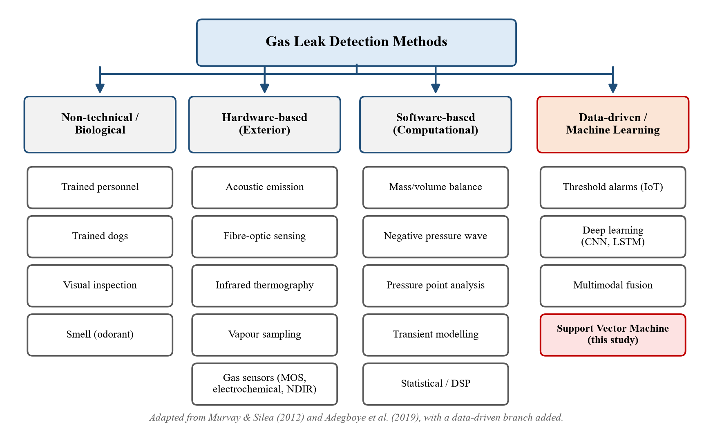

03 · The problem & the data
Gas leaks and gas sensors
The background from Chapter 1: what the danger is, how cheap gas sensors work, and why a single sensor with a fixed alarm level is not good enough.
In plain words
Factories burn LPG and natural gas. Cold stores cool food with ammonia. Depots store and move gas cylinders and chemicals. Any of these can leak, and most of these gases have no colour and often no smell. People cannot detect them, so machines must.
A cheap gas sensor is a small heated chip whose electrical resistance changes when gas touches it. The problem is that each chip reacts to many gases. So a single chip can say "something is in the air" but not "it is ammonia". Put seven different chips together, though, and the pattern of their readings is different for each gas. Reading that pattern is a classification problem, and that is where the SVM comes in.
Why it matters
- About 2.78 million people die from work-related causes each year, and over 1 billion workers are exposed to hazardous substances (ILO, 2019, 2021).
- Bhopal, India (1984): methyl isocyanate leak; at least 3,800 dead within hours.
- Cold-chain logistics: ammonia leaks killed at least 15 at a Shanghai cold store (2013) and hospitalised 32 near an Alabama warehouse (2010).
- Bangladesh: BM Container Depot, Sitakunda (2022) — 51 dead; Seema Oxygen plant (2023) — 7 dead; Siddique Bazar, Dhaka (2023) — 26 dead, linked to leaking gas; Narayanganj mosque (2020) — 34 dead from a leaking pipeline.
In many of these cases the leak started long before the disaster. Either no detector existed, or it failed to give a warning people trusted.
Gas pipelines: the real-life setting new
Section 1.3 of the report. Bangladeshi natural gas is 97.33% methane and reaches users through pipelines: gathering lines, high-pressure transmission lines, regulating stations (city gates), distribution mains under the streets, and service lines and risers into each building. The Titas network alone had 13,238 km of pipes in 2021, mostly built from the 1970s to the late 1980s. A survey of 1,682 km found methane at 9,926 places. The Narayanganj and Siddique Bazar blasts both came from leaking Titas lines.

Your system targets the low-pressure end, where pipeline gas meets factories, warehouses and homes. The full story, and the test on real gas-pipe leak recordings, is on page 09.
Common dangerous gases
| Gas | Where it is found | Danger level | Burns between (% in air) |
|---|---|---|---|
| LPG (propane/butane) | fuel, forklifts, cylinders | IDLH 2,000 ppm | ≈ 2–9.5 |
| Methane | natural-gas lines | suffocates | 5–15 |
| Carbon monoxide | furnaces, engines | IDLH 1,200 ppm | 12.5–74 |
| Ammonia | cold-store refrigeration | IDLH 300 ppm | 15–28 |
| Hydrogen sulfide | waste, chemical plants | IDLH 100 ppm | 4–44 |
IDLH = immediately dangerous to life or health. Sources: NIOSH, OSHA and NOAA, as cited in Table 1 of the report.
Notice that ammonia becomes deadly at 300 ppm, which is 0.03%, far below the 15% at which it burns. A useful alarm must react to small amounts and must know which gas it is seeing.
How a metal-oxide (MOS) sensor works
Heat the film
A tiny heater warms a layer of tin dioxide (SnO₂) to a few hundred degrees.
Oxygen traps electrons
Oxygen from the air sticks to the surface and captures free electrons. Fewer free electrons means high resistance.
Gas releases them
A reducing gas reacts with that oxygen and gives the electrons back. Resistance falls, current rises.
Read a number
The circuit turns this into a voltage, and a 10-bit ADC turns the voltage into an integer from 0 to 1023.
| Sensor | Mainly detects |
|---|---|
| MQ2 | LPG, butane, methane, smoke |
| MQ3 | alcohol, ethanol, smoke |
| MQ5 | LPG, natural gas |
| MQ6 | LPG, butane |
| MQ7 | carbon monoxide |
| MQ8 | hydrogen |
| MQ135 | air quality: ammonia, benzene, smoke |
Strengths
Cheap, small, fast, long-lived, simple circuit.
Weaknesses
React to many gases (cross-sensitivity), drift with age, temperature and humidity.
Ways to detect leaks

Why a threshold alarm is not enough
A threshold alarm rings when one sensor passes a fixed level. It has three problems:
- It cannot name the gas. A cleaning spray and an LPG leak can push MQ2 to the same level.
- False alarms. Harmless smells trigger it, so workers learn to ignore it (Rahman et al., 2017).
- Drift. As the sensor's baseline creeps, a fixed level slowly becomes wrong.
Using all seven sensors together and letting a classifier read the pattern solves the first two problems. The third, drift, remains a limitation of this project and is tested directly in Chapter 4.
What "real-time" means here
A real-time system is correct only if it answers in time (Shin & Ramanathan, 1994). The sensors give a new reading every 2 seconds. So the model must classify each reading in well under 2 seconds. Your SVM takes about 1.1 ms, which is roughly 1,800 times faster than needed.
Say this if asked "why this project?"
"Gas leaks from old pipelines and factory gas lines kill people in Bangladesh, and cheap gas alarms watch one sensor and ring at a fixed level, so they cannot tell a dangerous leak from a harmless smell, and people stop trusting them. I used seven cheap sensors together and an SVM to recognise the pattern, which names the gas and does it within about a millisecond. I also tested the same method on real gas-pipeline leak recordings."